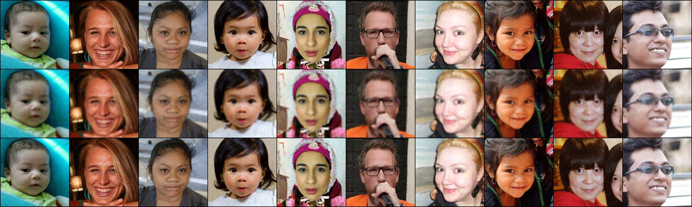

INFERENCE WALKTHROUGH / NOT A REPRODUCTION
四个任务都出图，
相位恢复还认得出是脸。
官方实现 + pixel FFHQ 权重（ffhq_10m.pt），在仓库自带的 10 张 demo-ffhq 上跑四个任务：下采样 ×4 28.83 dB、高斯模糊 61/3.0 29.02 dB、box 修复 24.56 dB、相位恢复 30.40 dB（按 README 取 4 次采样最好的一次）。所有任务都用 5 个 ODE 步 × 200 个退火步，即 DAPS-1K；论文对非线性任务用 DAPS-4K，这是明确偏差。没有 FID，没有 test-ffhq 100 张。
跑了什么
目标是验证「Langevin 内循环 + 加噪退火」的外循环在真实权重上能跑，并覆盖线性和非线性两类任务。数据用仓库自带的 dataset/demo-ffhq/00000..00009.png（10 张 256×256），配置 +data=demo-ffhq；论文用的是 test-ffhq 100 张，本次没有下载。
四个任务都取 README 的 commands/pixel_ffhq.sh 命令形态，算子与噪声用 configs/task/*.yaml 的 pixel 默认值：下采样 ×4、高斯核 61/强度 3.0、box 128×128 修复、相位恢复 oversample 2.0。num_runs 按 README：phase_retrieval=4，其余=1。
环境与改动
Python 3.8 + torch 2.3.0+cu121 + torchvision 0.18.0 + diffusers 0.32.2 + hydra-core 1.3.2 + torchdiffeq/piq/kornia，与 README 建议一致；wandb: False，不联网。权重是 download.sh 里 pixel FFHQ 那一项（Google Drive id 1BGwhRWUoguF-D8wlZ65tf227gp3cDUDh，即 openai ffhq_10m.pt，358 MB），只取了这一个，没有拉 LDM/SD/ImageNet 那十几 GB。
代码无改动。为跑通只做了两件事：把权重软链到 config 写死的 code/checkpoints/ffhq256.pt；把 LeviBorodenko/motionblur 克隆到 code/forward_operator/motionblur/，因为 forward_operator/__init__.py 无条件 import 它（只为 import 通过，未跑运动模糊）。依赖坑：requirements.txt 里的 regex-2024==11.6 是坏包名，按 regex==2024.11.6 装。
结果
| 任务 | runs | PSNR↑ | SSIM↑ | LPIPS↓ | 输出 |
|---|---|---|---|---|---|
| 下采样 ×4 | 1 | 28.83 | 0.766 | 0.194 | out/ffhq/down_sampling/ |
| 高斯模糊（61/3.0） | 1 | 29.02 | 0.771 | 0.183 | out/ffhq/gaussian_blur/ |
| box 修复（128×128） | 1 | 24.56 | 0.751 | 0.163 | out/ffhq/inpainting/ |
| 相位恢复（oversample 2.0） | 4 | 30.40 | 0.784 | 0.154 | out/ffhq/phase_retrieval/ |
每个任务目录里有 eval.md（逐图指标）、metrics.json、grid_results.png（原图 / 观测 / 复原拼图）、samples/、trajectory/。耗时（单卡 4090D，与 ΠGDM 共用卡时）：下采样约 5 min、高斯模糊约 10 min、修复约 5 min、相位恢复（4 runs）约 16 min；DAPS 单独约 8 GB，两进程同卡峰值约 23 GB。
小样本推理走查（10 张 demo，非论文 100 张 test-ffhq 与 4K 配置），数值不等同论文指标。定性：四种任务均出图正常、无发散；相位恢复由纯相位测量恢复出可辨认的人脸（观测只剩纹理相位，复原后五官清晰），与「非线性任务上 DAPS 优势最大」的方向一致；修复的中心区纹理与原图差异较大，24.56 dB 是四者最低。
样例

grid_results.png，按原图 / 4× 下采样观测 / DAPS 复原排列。
没跑的部分与局限
- 配置不对等：非线性任务（相位恢复）论文用 DAPS-4K（10×400），本次统一用 DAPS-1K（5×200）。30.40 与论文 30.63 只是量级相同，不能当复现。
- 数据小且是 demo：10 张，不是论文的 100 张 test-ffhq；指标方差未评估。
- 相位恢复取最好的一次：
num_runs=4按 README，但报告的数字是 40 张采样里的最好者，不是单次采样。 - 未覆盖的分支：LDM / Stable Diffusion（LatentDAPS）、motion_blur、nonlinear_blur、HDR、rand inpainting、CS-MRI 全部未跑。
- 没有 FID：生成集规模不够，也没有 inception 统计。
文件位置
| 路径 | 内容 |
|---|---|
/data1/kxchen/infer-repro/daps/code | 官方仓库 @ 0b18272，无算法改动 |
.../daps/out/ffhq/<task>/ | eval.md、metrics.json、grid_results.png、samples/、trajectory/ |
.../daps/RECORD.md | 实验记录与数字出处 |
来源
- 论文（arXiv:2407.01521）与官方仓库。
- 权重：openai
ffhq_10m.pt（仓库download.sh的 pixel FFHQ 项）。 - 本页数字来自
out/ffhq/*/metrics.json与eval.md，未手工改写；样例图为grid_results.png的等比缩放版。